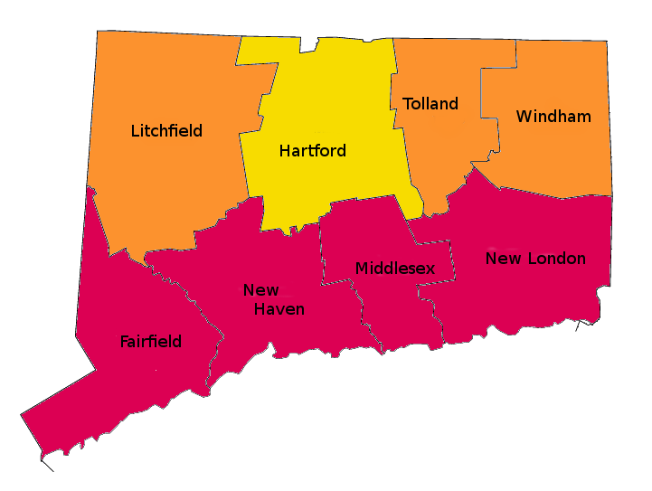
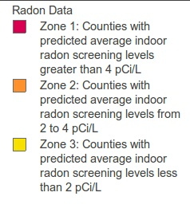

What is Radon?
Radon is a gas created in the soil from trace amounts of uranium and radium in the soil. These elements can be found everywhere in the world. Therefore, any building has the potential for elevated levels of radon. It is usually not a question of "Is there radon?" but rather, "How much radon is there?"
Radon comes from natural deposits of uranium and radium in the soil. Typically, it is not a result of manmade landfills or other suspicious sources
Uranium breaks down to radium, which in turn decays into radon gas. Radon is an inert gas, which means that it does not react or combine with the elements in the ground. Because of this, radon gas can move up through the soil into the atmosphere, where it is easily diluted. However, when it enters a building constructed on top of this soil, it can build up and become a health concern.
People cannot see, taste or smell radon. There is no way that one can sense the presence of radon. Despite this, it can have a detrimental effect on people by increasing their likelihood of developing lung cancer.
Radon is a radioactive gas that can enter homes. Prolonged exposure to this gas can increase the potential for lung cancer. It is believed that radon causes approximately 14,000 to 21,000 lung cancer deaths per year in the U.S.
Uranium breaks down to radium, which in turn decays into radon gas. Radon is an inert gas, which means that it does not react or combine with the elements in the ground. Because of this, radon gas can move up through the soil into the atmosphere, where it is easily diluted. However, when it enters a building constructed on top of this soil, it can build up and become a health concern.
How does radon enter a building?
Buildings are typically at a lower pressure than the surrounding air and soil. This causes radon and other soil gases to be drawn into the building.
One reason this occurs is the effect that exhaust fans have when removing air from a building. When air is exhausted, outside air enters the building to replace it. Much of this replacement air comes in from the underlying soil.
A second reason that radon is drawn into a building is because when the indoor temperatures are higher than the outdoor temperatures, thermal effects occur inside the building. Just as warm air causes a balloon to rise because the surrounding air is cool, warm air rises within a building and is replaced by cold, dense outside air. Some of the outside air, which is displacing and replacing the interior air, moves through the soil and carries radon in with it.
Incidence of Radon In The U.S.
The potential for elevated radon is not uniform throughout the country. Although you can never be certain that a radon problem will not exist, the U.S. EPA and the U.S. Geological Survey have identified areas of the country where the odds are the greatest of having a radon concern. The map below is the result of their analysis of indoor radon measurements, local geology, and population densities in an effort to rank radon potentials in relation to political boundaries (county lines). The map indicates three radon potential zones, defined by the likelihood of finding radon measurements within certain ranges when a short-term, closed building radon test is performed. However, it is worthwhile to note from the U.S. map that although a large portion of the state is considered to have the potential for high radon levels, it is not the only state that has a radon concern.
 